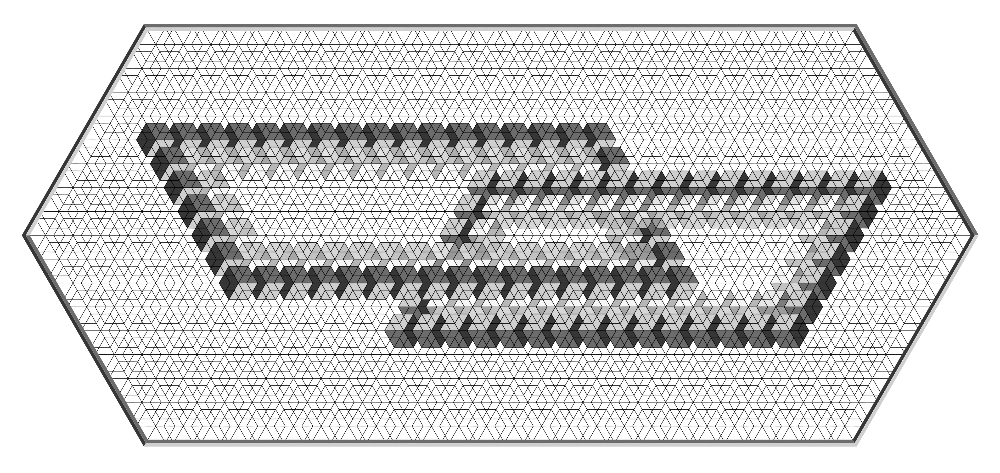

Authors
Lewis Ghrist and Robert Ghrist
Abstract
The Penrose triangle, staircase, and related "impossible objects" have long been understood as related to first cohomology $H^1$: the obstruction to extending locally consistent interpretations around a loop. This paper develops a cohomological hierarchy for a class of visual paradoxes. Restricting to systems built from bistable elements — components admitting exactly two local states, such as the Necker cube's forward/backward orientations, a gear's clockwise/counterclockwise spin, or a rhombic tiling corner's convex/concave interpretation — allows the use of $\mathbb{Z}_2$ coefficients throughout, reducing obstruction theory to parity arithmetic. This reveals a hierarchy of paradox classes from $H^0$ through $H^2$, refined at each degree by the relative/absolute distinction, ranging from ambiguity through impossibility to inaccessibility. A discrete Stokes theorem emerges as the central tool: at each degree, the connecting homomorphism of relative cohomology promotes boundary data to interior obstruction, providing the uniform mechanism by which paradoxes ascend the hierarchy.
Things To Come . . .
Throught out the process of exploring these visual paradoxes, we came up with a number of interesting examples and visuals, not all of which were included in the paper itself. I am planning on creating a gallery here of all of them, so stay tuned. For now though, we have created a playlist for the animated pardoxes mentioned in the paper which can be found here: Companion Animations Playlist (YouTube).